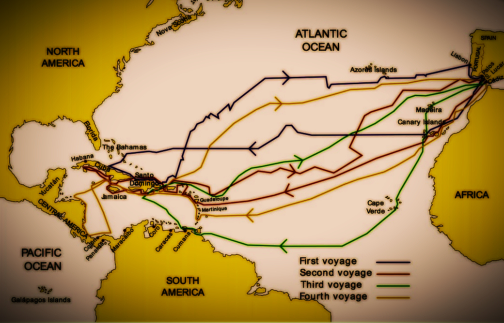

事迹：四次远航
 哥伦布于1492年8月3日带着3艘船从西班牙出发，目的是证明地球是圆的。这次历史性的航海探险共有3艘船：圣玛利亚号、平塔号和圣克拉号。然而，这次航行并不一帆风顺。
不久后，其中一艘船遭受了损害，不得不在附近的岛屿停留进行维修。修补完成后，哥伦布的舰队重新出发，开始了长达5周的横渡大西洋的壮丽征程。幸运的是，航行过程中没有遭遇大风大浪，信风也助推他们的进展，使得这次航程相对顺利。
经过5周的航行抵达了美洲岛屿。他想在那里殖民并传播基督教。后来，他探索了伊斯帕尼奥拉岛，命名为“西班牙”岛。然后返回西班牙，带回一些印第安人。他最终回到欧洲，受到葡萄牙国王接见后返回西班牙。
这次航海探险不仅改变了世界地图和历史格局，还标志着大发现时代的开始，对后来的探险家和殖民者产生了深远的影响。
哥伦布于1492年8月3日带着3艘船从西班牙出发，目的是证明地球是圆的。这次历史性的航海探险共有3艘船：圣玛利亚号、平塔号和圣克拉号。然而，这次航行并不一帆风顺。
不久后，其中一艘船遭受了损害，不得不在附近的岛屿停留进行维修。修补完成后，哥伦布的舰队重新出发，开始了长达5周的横渡大西洋的壮丽征程。幸运的是，航行过程中没有遭遇大风大浪，信风也助推他们的进展，使得这次航程相对顺利。
经过5周的航行抵达了美洲岛屿。他想在那里殖民并传播基督教。后来，他探索了伊斯帕尼奥拉岛，命名为“西班牙”岛。然后返回西班牙，带回一些印第安人。他最终回到欧洲，受到葡萄牙国王接见后返回西班牙。
这次航海探险不仅改变了世界地图和历史格局，还标志着大发现时代的开始，对后来的探险家和殖民者产生了深远的影响。
 第二次：1493年9月25日哥伦布率领约1500人分乘17艘船只，
从加的斯出发，11月3日来到瓜德罗普岛和波多黎各等岛，然后驶抵海地岛。此航行的目的就是为了殖民他一直以为的”东印度群岛“。上次航海留下的39名船员的据点已经被夷为平地了，又建立了伊莎贝拉堡——西班牙在美洲的第一块殖民地。
哥伦布在美洲建立了永久居民点，使得美洲接入了人类文明，也为西方日后在美洲的拓殖奠定了基石。
第二次：1493年9月25日哥伦布率领约1500人分乘17艘船只，
从加的斯出发，11月3日来到瓜德罗普岛和波多黎各等岛，然后驶抵海地岛。此航行的目的就是为了殖民他一直以为的”东印度群岛“。上次航海留下的39名船员的据点已经被夷为平地了，又建立了伊莎贝拉堡——西班牙在美洲的第一块殖民地。
哥伦布在美洲建立了永久居民点，使得美洲接入了人类文明，也为西方日后在美洲的拓殖奠定了基石。
 第三次：1498年5月30日，哥伦布组建了6艘船只和200人组成的船队，
分两组，3只船直驶海地岛，由哥伦布自己带着另3只船，经佛得角群岛向西航行，于8月1日发现特立尼达岛。8月5日在委内瑞拉半岛登陆，第一次踏上南美大陆。8月31日探险队发生了内乱，哥伦布的管理能力被被国王特使质疑，
官职一撸到底，解除所有职务和没收财产，然后哥伦布被强行押回西班牙。哥伦布后来被释放，但是当初国王答应给的福利待遇却统统没了。
1498年5月30日，哥伦布组建了6艘船只和200人组成的船队，分两组，3只船直驶海地岛，由哥伦布自己带着另3只船，经佛得角群岛向西航行，于8月1日发现特立尼达岛。8月5日在委内瑞拉半岛登陆，第一次踏上南美大陆。
8月31日探险队发生了内乱，哥伦布的管理能力被被国王特使质疑，官职一撸到底，解除所有职务和没收财产，然后哥伦布被强行押回西班牙。哥伦布后来被释放，但是当初国王答应给的福利待遇却统统没了。
第三次：1498年5月30日，哥伦布组建了6艘船只和200人组成的船队，
分两组，3只船直驶海地岛，由哥伦布自己带着另3只船，经佛得角群岛向西航行，于8月1日发现特立尼达岛。8月5日在委内瑞拉半岛登陆，第一次踏上南美大陆。8月31日探险队发生了内乱，哥伦布的管理能力被被国王特使质疑，
官职一撸到底，解除所有职务和没收财产，然后哥伦布被强行押回西班牙。哥伦布后来被释放，但是当初国王答应给的福利待遇却统统没了。
1498年5月30日，哥伦布组建了6艘船只和200人组成的船队，分两组，3只船直驶海地岛，由哥伦布自己带着另3只船，经佛得角群岛向西航行，于8月1日发现特立尼达岛。8月5日在委内瑞拉半岛登陆，第一次踏上南美大陆。
8月31日探险队发生了内乱，哥伦布的管理能力被被国王特使质疑，官职一撸到底，解除所有职务和没收财产，然后哥伦布被强行押回西班牙。哥伦布后来被释放，但是当初国王答应给的福利待遇却统统没了。
第四次：1502年5月9日，哥伦布重新被任用，率领4艘船只和约150人出发，
1502年6月15日，发现马提尼克岛，然后沿海地岛南海岸西行，过牙买加，再沿洪都拉斯南驶，越尼加拉瓜和哥斯达黎加，最后抵巴拿马湾。1503年6月折回牙买加岛，1504年11月7日，从多米尼加南部的圣多明各回到西班牙。